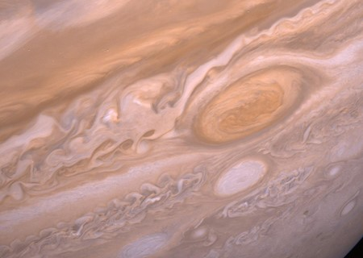

JÜBİTER
Jüpiter, Güneş Sistemimizdeki en büyük gezegendir. Yıldız olmaya yaklaşmış bir boyutu vardır
fakat büyüklüğü belli bir miktara ulaşmadığı için merkezinde nükleer tepkime başlamamıştır.
Atmosferi dönen bulut çizgileri ile kaplıdır. “Büyük Kırmızı Leke” olarak adlandırılan yerde yüzlerce
yıldır devam eden fırtınalar vardır. Jüpiter bir gaz devidir, bu yüzden katı bir yüzeyi bulunmamaktadır.
Merkezinde, Dünya büyüklüğünde bir katı çekirdek bulunduğu düşünülmektedir. Jüpiter’in
ayrıca halkaları vardır fakat gözle görülemeyecek kadar solgundur.
Jüpiter Gezegeni(Kaynak:NASA)
Jüpiter’in bir günü 10 saat sürmektedir ve Jüpiter’in bir yılı yaklaşık olarak 12 Dünya yılına eşittir.
Jüpiter’in en ünlüleri Gaynmede, Europa olmak üzere doğrulanmış 79 tane uydusu vardır.
Jupiter ve Ganymede (Kaynak:NASA)

Voyager 2 tarafından çekilen "Büyük Kırmızı Leke" (Kaynak:NASA)
Kaynak: NASA